← 返回阅读库 · 原论文目录
论文讲解阅读文档 · 机器人学 · v095
A Framework for Efficient Robotic Manipulation[2012.07975]
视频时长 00:05:32；讲解文字 2,712 字符；提取讲解画面 19 张。按视频原顺序阅读，每段文字保留时间戳。
文字来自整段视频的自动语音转写，按自然停顿分段，并与 PPT / 论文页面 / 演示画面对齐。未将讲解压缩为摘要；术语、数字和口述公式请结合画面及原论文核对。 阅读稿已校正规范部分明确术语误识别；原始逐字稿和每处修改记录另行保留。
讲解画面为源视频截图（640×360），不是可编辑 PPT 文件。全片按每秒 2 帧扫描内容变化，逐步展开页保留；连续动画保留代表画面。清晰度受源视频限制。
下载完整资料包 · 含离线 HTML、PDF、Word、全部 PPT 画面和字幕。
原论文与材料
Learning Visual Robotic Control Efficiently with Contrastive Pre-training and Data Augmentation · 下载完整 PDF（9 页）
按时间阅读
00:00:00–00:00:13 · 画面 001
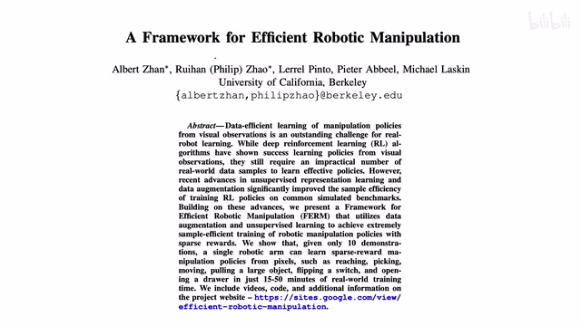
00:00:00–00:00:13 · 画面 001大家好,今天我们来快速水一篇论文 A Framework for Efficient Robotic Manipulation 这篇论文结构上设计上本质上非常简单我们水这篇是借这个机会聊聊其他的东西首先一个 intuition 这个 reinforcement learning 我们想在现实世界中部署 reinforcement learning 一般来讲特别是 online 这些情况它需要大量的和现实世界环境中的交互
00:00:13–00:01:10 · 画面 002
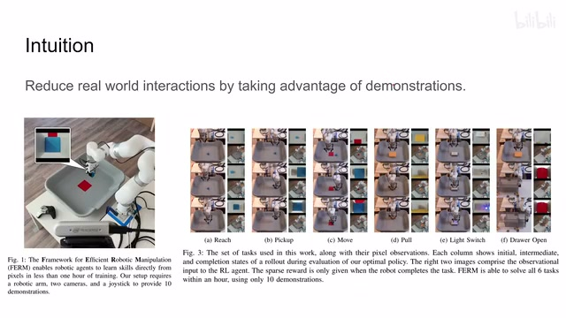
00:00:13–00:01:10 · 画面 002你在这些交互中去收集样本去收集 reward 然后再去训练但这些交互呢归根结底呢都是这个机器运行的成本都是钱那么本文的核心的思想就是 efficient 嘛对吧叫 data efficient 就是尽量减少和我们真实世界的交互那本文的方法也非常直接对吧我机器自己去摸索自己去学那可能是确实耗费时间效率比较低怎么办呢找个人来教他对吧 demonstration那这个跟你一开始读论文读不明白对吧然后上网搜一搜看有没有老哥讲过这个东西那一样的道理它就让你的这个学习呢能够快很多那么当然你也要注意真笔啊不能照单全收对吧要保留一个自己的判断那我们直接来看作者这里的这个设计吧它呢就是有这么一个机械手这是那个 xArm 国产的入呢你可以看到这里有一个摄像头然后呢这里呢有一个在机械手上的一个摄像头两个摄像头
00:01:10–00:01:54 · 画面 003
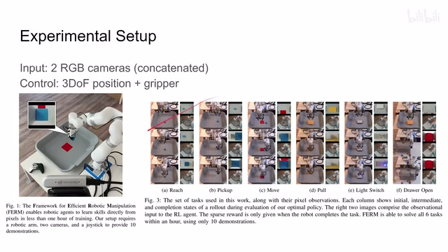
00:01:10–00:01:54 · 画面 003他们的这个 RGB 的这个图像呢会就是 downsample 然后切对吧最后再给它串到一起其实就是在 channel 上叠起来嘛那我们 agent 给大家指令呢你可以看到它包括我们这个手爪三个自由度注意这是三个自由度位置上的这个移动然后呢加上这个爪子的这个开闭而不是直接的去算这里面每一个关节它的这个操作的量这样呢降低了我们这个 reinforcement learning 的这个难度也是比较实用的一个技巧吧那么做什么任务呢这一看到作者设计了六种任务比如说第一个就是让我们的抓手到达某个位置捡起某个东西把某个东西移动到某个位置上这是一个难度递进的这么一个任务然后呢还有像这个然后还有像这个 pull 其实是 push 都可以开这个灯的开关然后拉抽屉这种动作这个呢是作者的设计的一个环境
00:01:54–00:01:55 · 画面 004
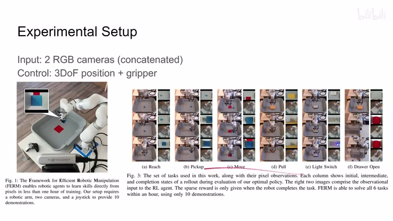
00:01:54–00:01:55 · 画面 00400:01:55–00:02:14 · 画面 005
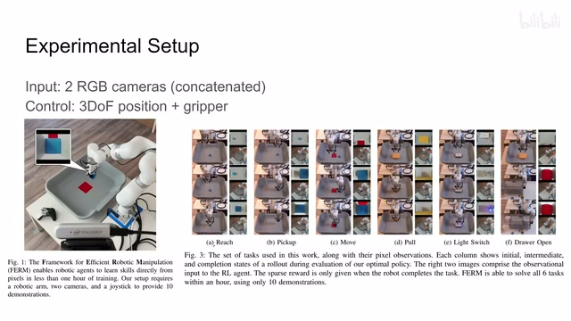
00:01:55–00:02:14 · 画面 00500:02:14–00:02:15 · 画面 006
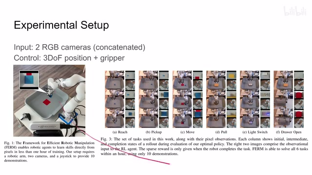
00:02:14–00:02:15 · 画面 00600:02:15–00:02:17 · 画面 007
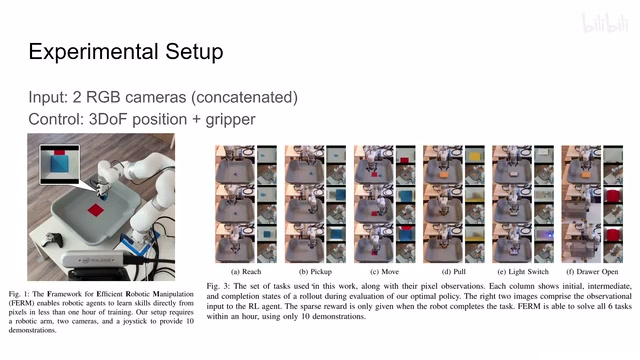
00:02:15–00:02:17 · 画面 007那么本文的重点呢在于说我们怎么样利用我们的这个人类给他做的这个示范那所以看到这个呢是整个论文的这个学习的流程那一开始呢我们要用人来收集一些 demonstration 也就是不同的 trajectory 或者叫 episode 对吧让人来告诉这个机器人我应该怎么完成他们呢就是拿一个 xbox 的这个手柄啊去控制让这个机械臂去做相应的动作完了之后呢这些东西呢就收集到这个 replay buffer 里面
00:02:17–00:02:23 · 画面 008
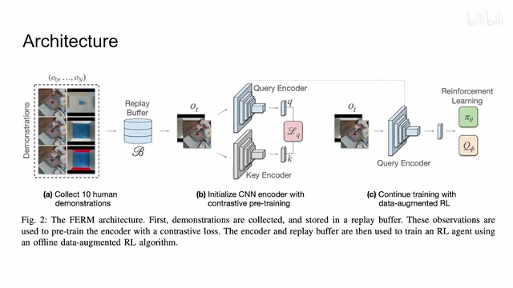
00:02:17–00:02:23 · 画面 00800:02:23–00:02:25 · 画面 009
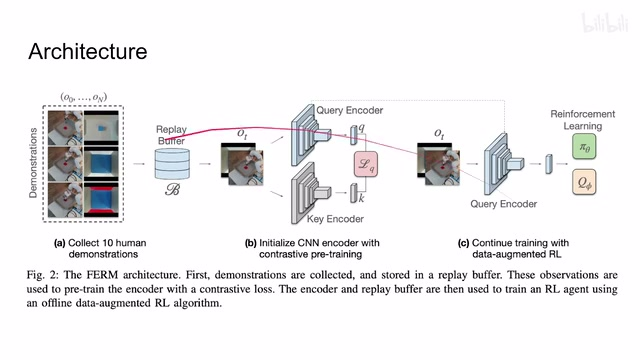
00:02:23–00:02:25 · 画面 00900:02:25–00:02:43 · 画面 010
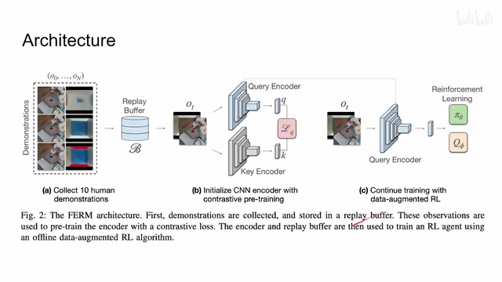
00:02:25–00:02:43 · 画面 01000:02:43–00:02:44 · 画面 011
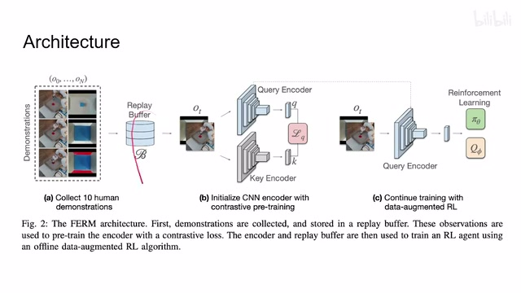
00:02:43–00:02:44 · 画面 011那有了这个东西之后呢作者并不是说直接的去做这个 reinforcement learning 而是呢我们中间加了一步对我们的这个 CNN 这个 encoder 因为我们出来是图像嘛它这个它提这个 feature 用的是 CNN 嘛对吧对这个 encoder 呢做了这个 contrastive learning 用它呢来做一个 pre-training 让我们的 encoder 有一个好的初始化这样子呢方便我们后面的 reinforcement learning 进一步减小这个 RL 的难度
00:02:44–00:02:51 · 画面 012
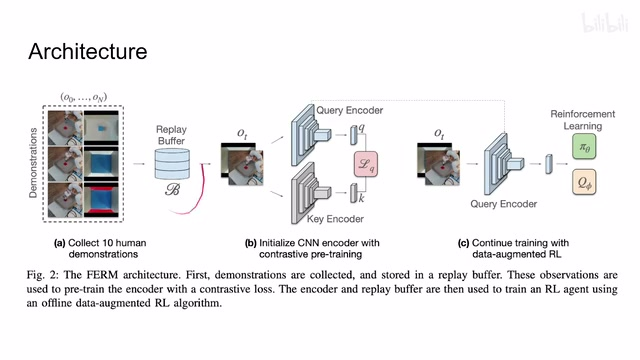
00:02:44–00:02:51 · 画面 01200:02:51–00:03:23 · 画面 013
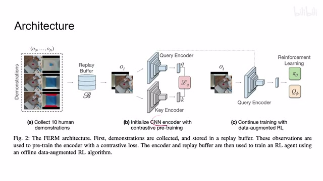
00:02:51–00:03:23 · 画面 013那么最后是一个 data-augmented reinforcement learning 就是我的图像经过了 data augmentation 之后再送到我们的 encoder 里面再做 RL 下面我们继续来看一些细节其实它都是我们之前介绍出来的知识堆积出来的前面的 demonstration 我们都知道了就不管了像 contrastive learning 它就是直接用了 CURL 之前我们讲过的就是一幅图像两个不同的 data augmentation
00:03:23–00:04:58 · 画面 014
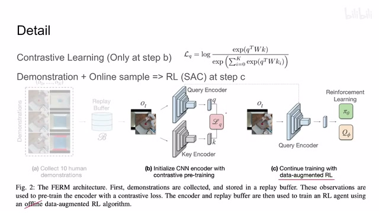
00:03:23–00:04:58 · 画面 014这里的 data augmentation 就是 random crop，就是一张大的图像随机切出一块来，然后呢做这个 contrastive learning，它的 contrastive loss 呢跟 CURL 一样，就是一个这个乘的形式，query 和 key 中间呢夹着一个 w 这个矩阵，这个 w 这个矩阵呢是我们需要学习的，还有 positive sample 在上面，negative sample 在下面，这个 InfoNCE 这些东西对吧，这个呢是在这个 pre-training 这个阶段，contrastive learning 发生的事情，那但是呢有一个有意思的事情就是你需要注意到
这个 contrastive learning 这个 contrastive loss 它只发生在这个 pre-training 这个阶段，而在后面我们做这个 online reinforcement learning 的时候它并没有发生，这个呢是它区别于 CURL 很重要的一个点，那说到 reinforcement learning 的这个部分呢，它区别于我们标准的这个 online RL，因为我们有之前有 demonstration 对吧，我们这个 demonstration 也可以拿来直接用，同时呢加上我们在线训练的这些 sample 对吧，他们一起来训练我们这个 RL 这个 agent，这里呢就是这个 Soft Actor-Critic
但是呢这里有这个 data augmentation，也就是说你的这个图像输入进来的时候也是要做这个 Random Shifts、Random Crop，然后呢再去做我们这个 Soft Actor-Critic，这个技巧呢你在 Rainbow 里面也见过，也是很常用的一个方法，那当然这里呢我也标出来了，这个 Offline 呢应该是不对的，确切的来说呢它应该是一个 Online 但是 Off Policy 的这么一个 Reinforcement Learning，这里呢我们注意一下，那么以上呢就是本文的这个核心的贡献就结束了
00:04:58–00:04:59 · 画面 015
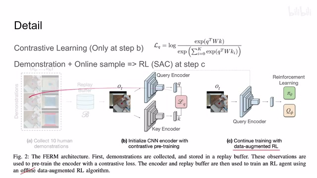
00:04:58–00:04:59 · 画面 01500:04:59–00:05:02 · 画面 016
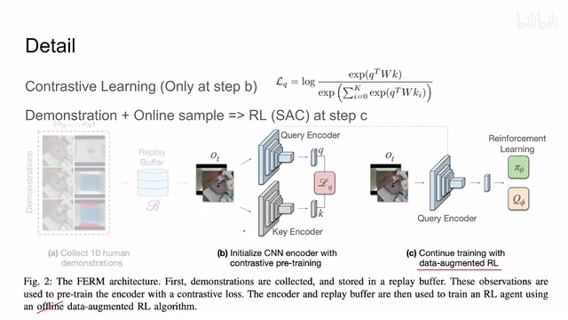
00:04:59–00:05:02 · 画面 016我们下面来看作者汇报一些结果，肯定有了 demonstration 的加持，我们的训练速度就变得非常快了，当然作者还是汇报了很多 ablation，包括我们怎么样决定 demonstration 的数量等等，感兴趣的朋友还是推荐你去查看原文，总的来说这篇文章的框架非常简单，用的技术都是我们之前讲过的这些东西，因为都是这一组人做的，我们介绍这个工作是因为后面它会经常作为一个 baseline 出现
00:05:02–00:05:16 · 画面 017
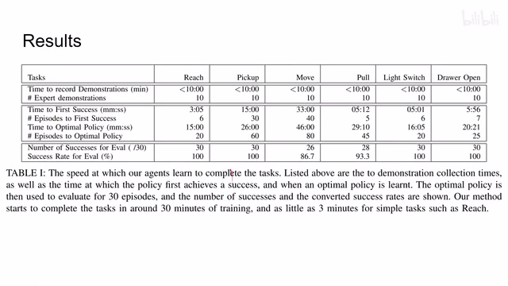
00:05:02–00:05:16 · 画面 01700:05:16–00:05:32 · 画面 018
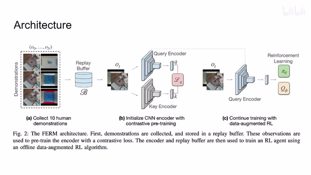
00:05:16–00:05:32 · 画面 018好的，那么以上就是我对这个论文的一个快速的介绍，那么感谢您的收看，再见
00:05:32–00:05:32 · 画面 019
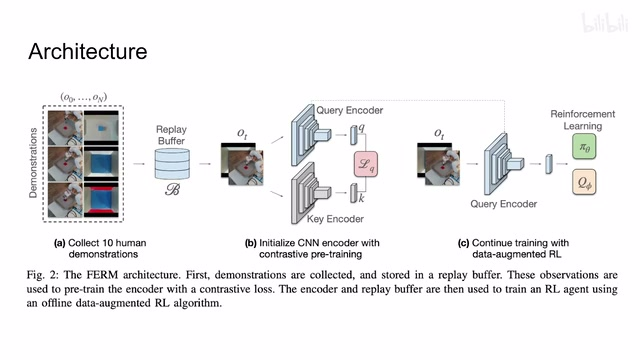
00:05:32–00:05:32 · 画面 019转写与来源说明 · 0 个自动复核提示
保留 13 个原始语音片段，0 个片段触发自动复核提示。提示仅用于定位可能的术语、重复或识别问题，不等于已确认错误。
讲解画面为源视频截图（640×360），不是可编辑 PPT 文件。全片按每秒 2 帧扫描内容变化，逐步展开页保留；连续动画保留代表画面。清晰度受源视频限制。
原视频：paper/合集_2026-10-16_机器人学/[论文简析]A Framework for Efficient Robotic Manipulation[2012.07975].mp4
SHA-256：70a21eff0033086890067185717a7640928954f7d0e0ad35721e59d3665041c4
全文按视频语音与画面制作。原论文可从上方链接下载；完整资料包保留全文、原始逐字稿、字幕和校对记录。